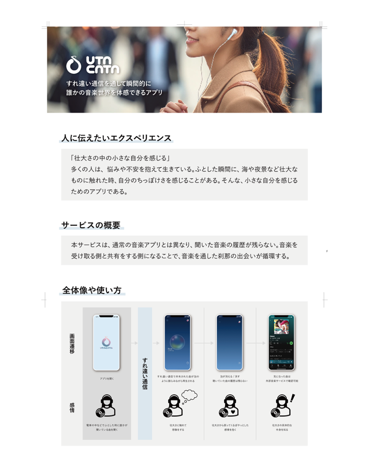
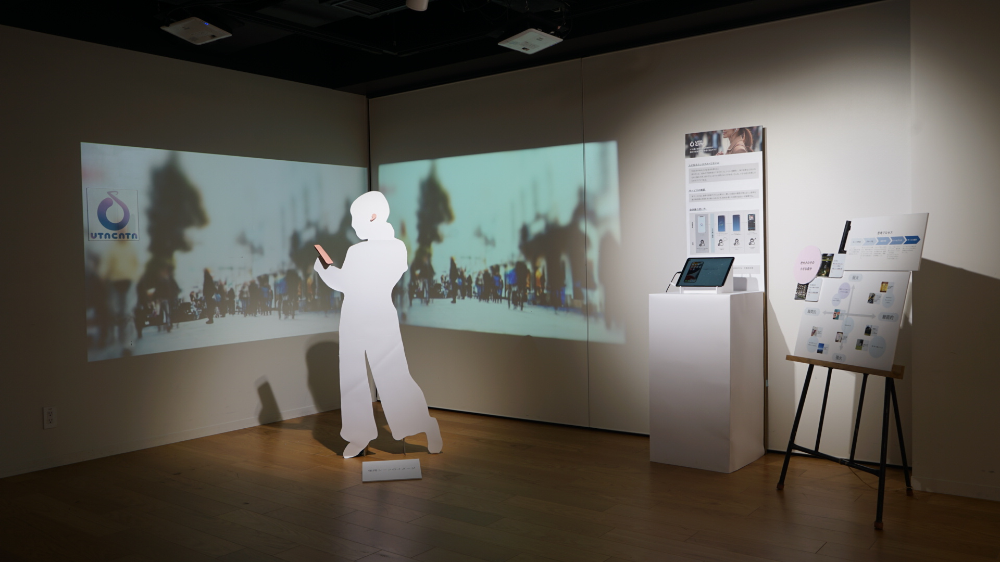

プロジェクトの概要
すれ違い通信を通して瞬間的に誰かの音楽世界を体感できるアプリケーションの設計とブランディングを担当しました。音楽を通じて人々の心をつなぎ、新しい出会いと発見を生み出すことを目指しています。
デザインプロセス
ユーザーの行動と感情を深く理解するためのリサーチから始め、直感的なインターフェースと心地よい体験を追求しました。ロゴデザインでは、音楽の流れと人々のつながりを表現しています。

成果と学び
本プロジェクトを通じて、音楽体験における「つながり」の重要性と、それを実現するためのUXデザインの可能性を探求しました。ユーザーの感情に寄り添いながら、技術的な実現可能性とのバランスを取ることの大切さを学びました。
